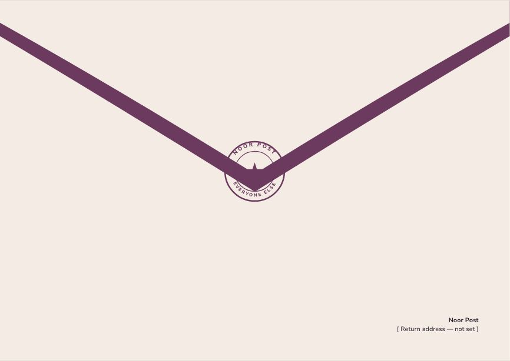
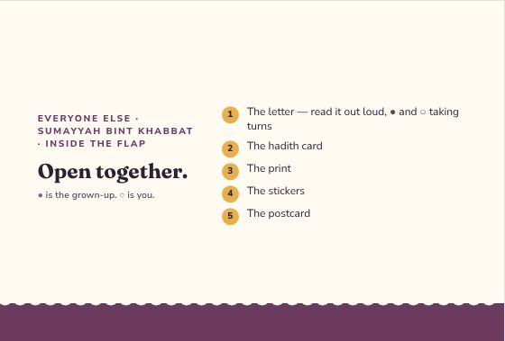
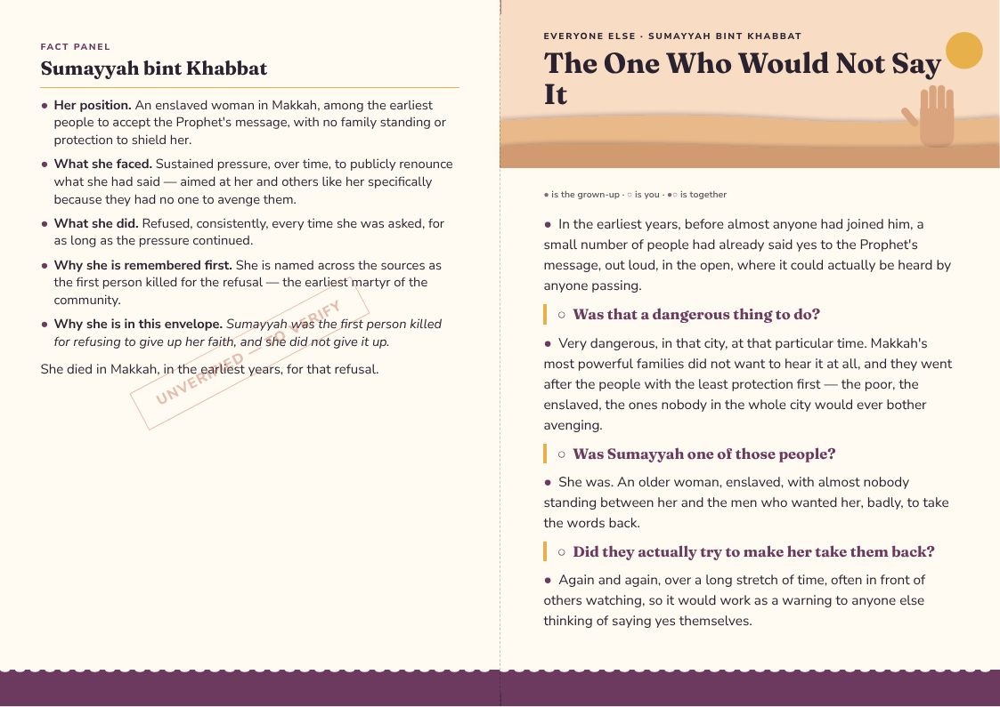
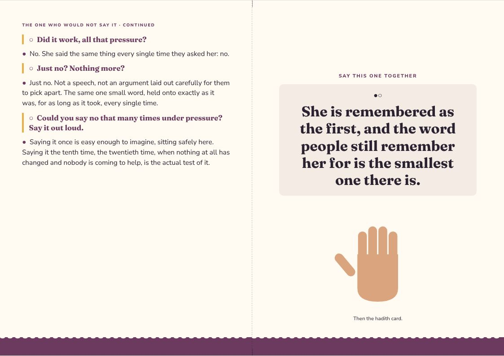
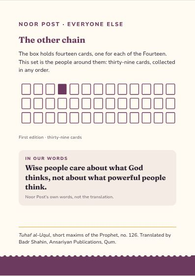
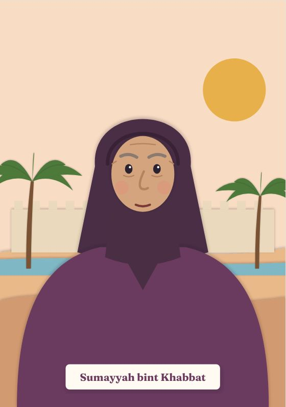
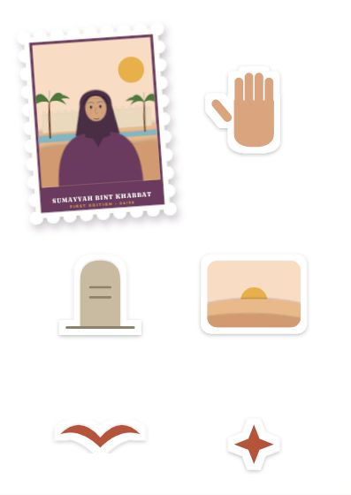
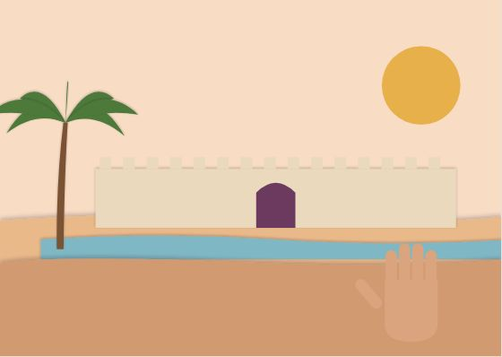

Everyone Else
Sumayyah bint Khabbat
Sumayyah was the first person killed for refusing to give up her faith, and she did not give it up.
Inside the flap
Open together.
- The letter — read it out loud, ● and ○ taking turns
- The hadith card
- The print
- The stickers
- The postcard
● is the grown-up. ○ is you.
The One Who Would Not Say It
● the grown-up · ○ the child · ●○ together
●In the earliest years, before almost anyone had joined him, a small number of people had already said yes to the Prophet's message, out loud, in the open, where it could actually be heard by anyone passing.
○Was that a dangerous thing to do?
●Very dangerous, in that city, at that particular time. Makkah's most powerful families did not want to hear it at all, and they went after the people with the least protection first — the poor, the enslaved, the ones nobody in the whole city would ever bother avenging.
○Was Sumayyah one of those people?
●She was. An older woman, enslaved, with almost nobody standing between her and the men who wanted her, badly, to take the words back.
○Did they actually try to make her take them back?
●Again and again, over a long stretch of time, often in front of others watching, so it would work as a warning to anyone else thinking of saying yes themselves.
○Did it work, all that pressure?
●No. She said the same thing every single time they asked her: no.
○Just no? Nothing more?
●Just no. Not a speech, not an argument laid out carefully for them to pick apart. The same one small word, held onto exactly as it was, for as long as it took, every single time.
○Could you say no that many times under pressure? Say it out loud.
●Saying it once is easy enough to imagine, sitting safely here. Saying it the tenth time, the twentieth time, when nothing at all has changed and nobody is coming to help, is the actual test of it.
●○She is remembered as the first, and the word people still remember her for is the smallest one there is.
Letter, reverse
SUMAYYAH BINT KHABBAT
●Her position. An enslaved woman in Makkah, among the earliest people to accept the Prophet's message, with no family standing or protection to shield her.
●What she faced. Sustained pressure, over time, to publicly renounce what she had said — aimed at her and others like her specifically because they had no one to avenge them.
●What she did. Refused, consistently, every time she was asked, for as long as the pressure continued.
●Why she is remembered first. She is named across the sources as the first person killed for the refusal — the earliest martyr of the community.
●Why she is in this envelope. Sumayyah was the first person killed for refusing to give up her faith, and she did not give it up.
She died in Makkah, in the earliest years, for that refusal.
Hadith card · First Edition 04 / 39
The most intelligent of people are the most fearful of God and the most obedient to Him. The most unintelligent of people are the most fearful of the rulers and the most obedient to them.
Tuhaf al-Uqul, short maxims of the Prophet, no. 126 · trans. Badr Shahin
A saying of the Prophet, matched to holding on when it is not safe to.
The design
Everyone Else — one style for the line
Every companion envelope shares one style, so the thirty-nine belong together: each front carries its person as a stamp. Every item at true size → · Print PDF


















The artwork fixes composition, colour and medium for every item; final illustration is still to be commissioned. The fact panel is still to verify.